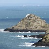
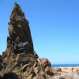
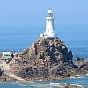
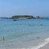
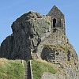
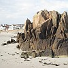
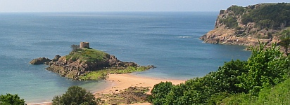

|  |  |  |  |  |  |
J'avons un tas d'rotchièrs lé tou dé l'Île, et lus noms et lus histouaithes sont bein întérêssants.
Les Pièrres dé Lé sont mênommées en Angliais "the Paternosters". La légende dit qu'en 1562, quand Helier de Carteret, Seigneu d'St. Ouën, navidgait en Sèr auve quarante fanmil'yes pouor lé colonîser, un des navithes fut naûfragi sus les Pièrres dé Lé. D'pis chu temps-là, les pêtcheurs tchi pâssaient les Pièrres criyaient ouï dé temps en temps les cris d's êfants tchi fûtent niés dans la naûfrage. Il' avaient don la couôteunme dé dithe lé "Notre Père" (en Latîn: "Pater Noster") quand i' passaient.
Ieune des Pièrres dé Lé s'appelle L'Êtchièrviéthe. Chu nom veint du Norrouais "skarfr" tchi veurt dithe "cormouothan", et don ch'est lé rotchi ès cormouothans.
La Motte, tch'est connue ès cheins tchi pâlent l'Angliais souos l'nom dé "Green Island", 'tait faite sèrvi par les pèrsonnes néolithiques coumme un empliaichement d'entèrrement. La Sociêté Jèrriaise a rêcémment fait des travaux à La Motte pouor empêchi l'êrosion d'la mé.
Lé Rotchi d'Rocque Bèr 'tait connu aut'fais coumme lé Rotchi des Chorchièrs viyant qu'nou criyait qu'les gens du grand sang y t'naient lus sabbats, et qu'les chorchiéthes lévaient des tempêtes pouor dêtruithe les batchieaux des pouôrres pêtcheurs et les nier. Bein seu, lé Rotchi d'Rocque Bèr est à tèrre ach'teu mais dans l'pâssé y'avait sans doute des mielles à l'entou.
 L'Île au Guerdain, au Portélet, est souvent app'lée "Janvrin's Tomb". La tou qu'nou's'y vait 'tait en véthité bâtie par lé Gouvèrnément Britannique quâsi chent ans auprès la mort du Cap'taine Janvrin.
Le Cheval Guillaume tchi s'trouve à la Bouonne Niet est supposé r'semblier à un j'va, et la légende nos dit qu' un janne houmme tch'avait nom Dgillaume êprouvait d'protêger sa fianchie d'un malîn esprit tch'en avait tchaie amouotheux et tchi voulait la haler dans la mé, où'est qu'i' d'meuthait. Pouor tuer lé brave Dgillaume, l'esprit sé changit en un blianc j'va. Quand Dgillaume trouvit lé mangnifique blianc j'va, i' l'montit. Lé j'va galopit dans la mé et Dgillaume réalisit qu'i' tait en dangi d'nier et qu'lé j'va n'tait pon réellement un annima, mais tchique monstre ou dgiâbl'ye. I' prînt un jet dé dgi dé sa câsaque et tapit lé j'va sus la tête. Lé pouver du dgi dêtruisît la magie du malîn esprit et i' fut transformé en pièrre. Et chu rotchi est le Cheval Guillaume.
Aut'fais, ch'tait la couôteunme dé faithe lé tou du Cheval Guillaume en baté à la Saint Jean.
I'Islet est l'nom d'la p'tite îlot sus tchi nou's-a bâti lé Châté Lîzabé. Aut'fais, ch'tait l'empliaichement d'l'Abbaye dé Saint Hélyi, et ch'tait sus l'rotchi, où'est qu'nou vait ach'teu l'Hèrmitage, qué Saint Hélyi pâssit tchînze ans à jeûner et à prier.
Nou dit qu'lé Nic ès Tchians prend san nom du brit des honmards tchi y d'meuthaient et tchi ouassaient coumme des tchians. Criy'ous chenna?
êcrit auve d'l'înformâtion dé d'dans d's articl'yes par Max Lucas, Fraînque Le Maistre et George F. Le Feuvre
Viyiz étout: